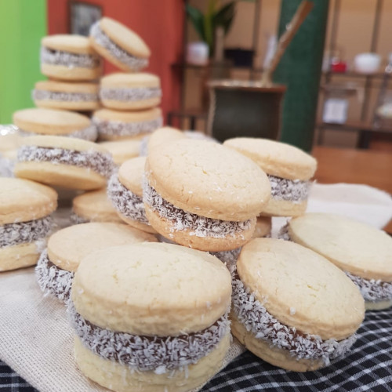

Receta del día
El día de hoy, cerca del 25 de mayo, la receta que vamos a mostrar es la de los alfajores de maicena, una tradicional comida argentina. Este clásico es bueno para acompañar el café en la mañana o el mate por la tarde. ¡No te los podés perder!
Una de las variedades más pedidas y consumidas, son los alfajores de maicena. Un alfajor de maicena es un dulce argentino clásico que consiste en dos galletas o tapas elaboradas a partir de almidón de maíz, también llamada maicena, rellenas de dulce de leche y cubiertas con coco rallado en los costados. Se destaca por su inconfundible sabor. Las galletas son suaves y tiernas, casi se deshacen en la boca, y el dulce de leche es el relleno tradicional.
Con su origen árabe, llegaron a la península ibérica durante la época de la invasión musulmana. Luego, fueron traídos a América por los españoles durante el período colonial y se popularizaron en Argentina, donde se han convertido en un dulce querido y tradicional.
A continuación te contamos todo lo que tenés que saber para hacerlos en casa.
Ingredientes
Antes de comenzar, es necesario tener en cuenta que para cocinar los alfajores de maicena, se requieren los siguientes ingredientes:
- Harina 0000 - 200 gramos
- Almidón de maíz - 300 gramos
- Bicarbonato de sodio - 1/2 cucharada
- Polvo para hornear - 2 cucharadas
- Manteca - 200 gramos
- Azúcar - 150 gramos
- Huevo - 1 entero y 2 yemas
- Esencia de vainilla - 1 cucharada
- Ralladura de 1/2 limón (opcional)
- Dulce de leche - cantidad necesaria y a gusto
- Coco rallado - cantidad necesaria y a gusto
Instrucciones
Para que la receta salga correctamente, se deben seguir ordenadamente los siguientes pasos:
- Tamizar la harina, el almidón de maíz, el bicarbonato de sodio y el polvo para hornear.
- En un bowl, batir la manteca con el azúcar. Agregar el huevo y las yemas de a una, mezclando bien cada vez.
- Incorporar los ingredientes secos tamizados anteriormente (harina, almidón de maíz, bicarbonato de sodio y polvo para hornear).
- Agregar la esencia de vainilla y ralladura de limón, mezclar bien hasta formar una masa homogénea.
- Sobre una mesa espolvoreada con harina, estirar la masa (sin amasarla) hasta que quede de 1/2 cm de espesor. Cortar con moldes en forma circular del diámetro que se prefiera.
- Colocar en una placa limpia y cocinar en horno a 180° durante 15 minutos. Una vez que las tapas estén cocidas, dejarlas enfriar.
- Formar los alfajores, uniendo dos tapas con dulce de leche en el medio.
- Rebozar los bordes con el coco rallado.
Video de ayuda
Y si preferís un video antes que texto, esto es para vos...
Resultado
Si seguiste la receta que te mostramos, algo similar a esto se debería ver tu preparación.
Esperamos te haya salido bien y la disfrutes.
Nos alegra que hayas llegado hasta aquí y esperamos que esta receta haya despertado tu creatividad en la cocina. Cocinar no es solo seguir pasos: es ponerle amor, disfrutar el proceso y compartir buenos momentos alrededor de la mesa.
Cada ingrediente, cada técnica, cada detalle cuenta… y nos encanta poder ser parte de tu experiencia culinaria.
¿Te animaste a probarla? Nos encantaría saber cómo te quedó. Puedes dejar un comentario, compartir tu foto en redes sociales o contar tu propia versión del plato. ¡La cocina también se trata de compartir!
Gracias por acompañarnos en esta deliciosa aventura.
¡Nos vemos en la próxima preparación!

Otras recetas
Si seguiste la receta que te mostramos, algo similar a esto se debería ver tu preparación.
Esperamos te haya salido bien y la disfrutes.
Nos alegra que hayas llegado hasta aquí y esperamos que esta receta haya despertado tu creatividad en la cocina. Cocinar no es solo seguir pasos: es ponerle amor, disfrutar el proceso y compartir buenos momentos alrededor de la mesa.
Cada ingrediente, cada técnica, cada detalle cuenta… y nos encanta poder ser parte de tu experiencia culinaria.
¿Te animaste a probarla? Nos encantaría saber cómo te quedó. Puedes dejar un comentario, compartir tu foto en redes sociales o contar tu propia versión del plato. ¡La cocina también se trata de compartir!
Gracias por acompañarnos en esta deliciosa aventura.
¡Nos vemos en la próxima preparación!
Si te gustó esta, tenemos miles de recetas más para vos. Estas son solo algunas de ellas: chocoflan, tarta cocada de dulce de leche o bagels.